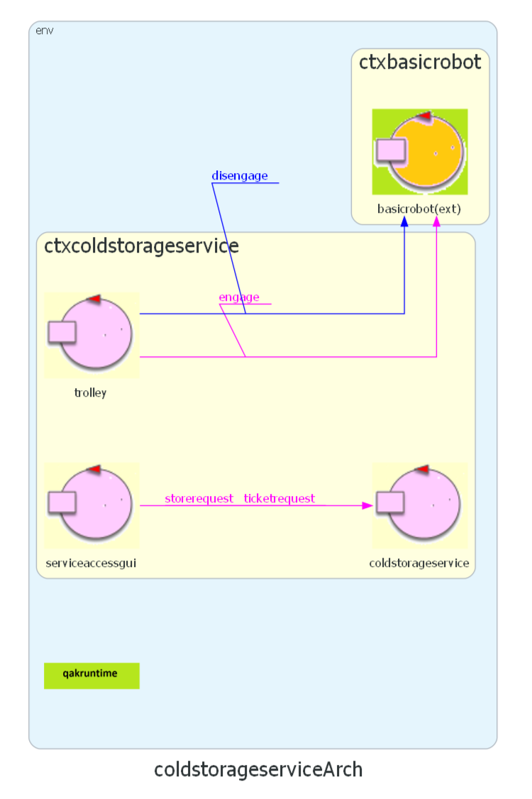

- By Letizia Mancini
- email: letizia.mancini3@studio.unibo.it
- GIT repo: https://github.com/llevtizia/coldstorageservice-iss2023
- matricola: 0000926656

Sprint 0: lo Sprint 0 si occupa dell'analisi dei requisiti del sistema. Si è concluso con la definizione di una prima architettura logica:

Dal modello definito nello Sprint 0, lo Sprint 1 aggiunge:
Nello
Come già indicato, il committente offre il servizio BasicRobot23
Per realizzare un primo modello del sistema sulla base delle analisi, si sceglie di utilizzare il linguaggio di modellazione Qak fornito dal committente. Il metamodello
L'architettura del sistema è la seguente:
Il sistema è costituito da due contesti:
| SPRINT1 |
|
| SPRINT2 |
|
| SPRINT3 |
|